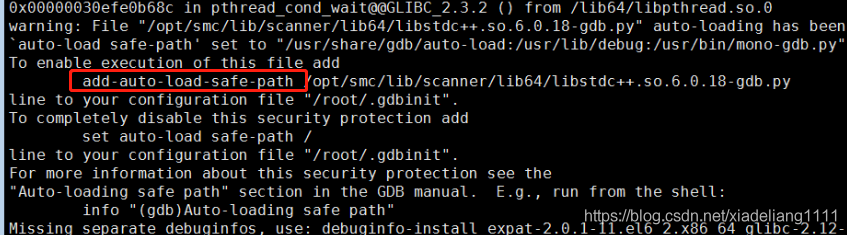

在gdb程序的时候，有时候会发现源代码文件找不到，对于那些带调试信息的系统库或者第三方库，很多时候当你真正想gdb去追他源代码的时候你会发现gdb根本找不到这些源代码路径。这个时候有两种选择：
【1】如果gdb这个时候告诉你找不到这个带调试信息库的源文件路径，此时给出的路径地址是绝对路径，比如
/home/rickyk/qt-4.8./src/corelib/tools/qstring.cpp: 没有那个文件或目录
这种提示的，你就应该用gdb提供的
set substitute-path
这个其实很好理解，就是替换规则，你如果想查看当前的替换规则，你可以
show substitute-path
比如此时我们需要qstring.cpp这个文件，但由于某种原因，目前我们不能在/home/rickyk/qt-4.8.6/src/corelib/tools/qstring.cpp中找到，但我们确可以在/home/rickyk/qt-everywhere-opensource-src-4.8.6/src/corelib/tools/qstring.cpp中找到，我们就
set substitute-path /home/rickyk/qt-4.8. /home/rickyk/qt-everywhere-opensource-src-4.8.
这是什么意思？其实就是让gdb在看到/home/rickyk/qt-4.8.6的时候他会做自动替换成/home/rickyk/qt-everywhere-opensource-src.4.8.6，也就是说gdb可以正确知道这个文件了。此时我们再show substitute-path可以看到此时的转换规则已经被我们加进去了
(gdb) show substitute-path
List of all source path substitution rules:
`/home/rickyk/qt-4.8.' -> `/home/rickyk/qt-everywhere-opensource-src-4.8.6'.
【2】如果此时的gdb弹出的错误信息不是绝对路径的概念，而是相对路径的概念
./a.cpp 没有那个文件或目录
那么此时你可以用gdb的第二个源代码路径法宝----directory(dir) dirName来指定，也就是说如果我们此时的a.cpp不在当前目录下，而是在当前目录下的bak文件夹下，我们只要
dir bak
这个时候我们的gdb就会把你加进去的dir整个替换到相对路径的前面，自己做拼接，也就是说，现在的./a.cpp变成了./bak/a.cpp。
注意两者的差别，对于绝对路径来说，你需要给出替换规则给他做字符串替换，对于相对路径来说，你需要给他目录来让他做拼接，也有点prefix的意思，这里的prefix由你给出，但相对路径整体结构由gdb给出，然后完成拼接操作。
PS: 同时你需要在.gdbinit上加上一句
set auto-load safe-path /
这样你才能让gdb去正确的在别的目录进行读取源代码 。(这里面的原因我目前不是很清楚，总之就是我一开始使用set substitute-path的时候怎么用都不成功，加上这句之后才可以，有同学知道的也可以告诉我原因),我看了下auto-load的介绍
set auto-load safe-path[directories]
Set the list of directories (and their subdirectories) trusted for automatic loading and execution of scripts. You can also enter a specific trusted file. Each directory can also be a shell wildcard pattern; wildcards do not match directory separator - see FNM_PATHNAME for system function fnmatch (see fnmatch). If you omit directories, ‘auto-load safe-path’ will be reset to its default value as specified during gdb compilation.
The list of directories uses path separator (‘:’ on GNU and Unix systems, ‘;’ on MS-Windows and MS-DOS) to separate directories, similarly to thePATHenvironment variable.
感觉这是在设置自动可以读取的script路径，不知道这对于set substitute-pah有什么影响。按照参考链接的说法，设置这个命令应该是让gdb去读取可信赖路径的.gdbinit才对。
参考链接： http://stackoverflow.com/questions/16595417/loading-gdbinit-from-current-directory
https://vecr.ece.villanova.edu/vecr/doc/gdb/Auto_002dloading-safe-path.html
使用gdb调试程序时，执行gdb 可执行程序 程序进程号
报错：

解决方案：
gdb -iex 'set auto-load safe-path /' 可执行程序 程序进程号


· 深入探究 MinimalApi 是如何在 Swagger 中展示的
· 原理：C++为什么一般把模板实现放入头文件
· 在 GitHub 上玩转开源项目的 Code Review
· 聊聊 C# 中的多态底层 (虚方法调用) 是怎么玩的
· 在 .NET 中使用 FixedTimeEquals 应对计时攻击
· 新手向GitHub仓库提交PR，结果 “轰炸” 了近40万开发者
· 极狐的流量迷途：营销比肩“蔚小理”，销量垫底造车新势力
· 王兴怎么预测美团的二季度？
· 收购银建保险经纪公司 理想汽车也要卖保险了
· 华为畅享50处理器揭秘：99％可能中芯国际代工麒麟710A
» 更多新闻...
2021-03-15 音视频同步原理及实现
2017-03-15 Thrift在Windows及Linux平台下的安装和使用示例
2017-03-15 VLC播放RTSP视频延迟问题
2017-03-15 H264码流结构分析和rtp打包结构详解
2017-03-15 H264中的SPS、PPS提取与作用
2017-03-15 H.264视频编解码SoC满足高清DVR设计需求
2017-03-15 rtmp，rtsp，hLS区别